Hela verksamhetens IT-landskap på ett ställe – processer, system, information och teknik, och hur allt hänger ihop.
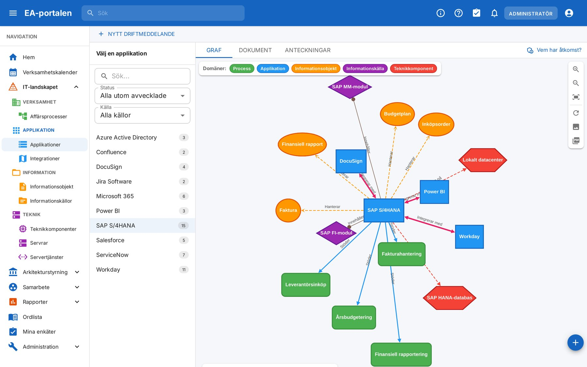
Kärnan ger en gemensam bild av IT-landskapet. Ovanpå den väljer varje organisation de moduler den behöver, och kan koppla på Integrationsplattformen för att hämta uppgifter automatiskt från andra system.
Processer, applikationer, informationsobjekt, informationskällor och teknikkomponenter – med sambanden mellan dem i klickbara grafer.
Ett tjugotal färdiga rapporter: portfölj, överlapp och luckor, livscykel, leverantörsberoende, NIS2, behandlingsregister med mera.
Skisser för nya lösningar, CSV-import, behörigheter per objekt och grupp, inloggning med Entra ID.
Händelser, frysperioder och förändringslogg i en gemensam kalender.
Arbetsytor för uppdrag och arbetsgrupper: sidor, möten, uppgifter och diskussion.
Principer, nulägesanalys, målarkitektur och GAP-analys med handlingsplan.
Organisationens begrepp och förslag på nya.
Frågor till systemförvaltare och användare, med resultat som rapporter.
Tillagda, ändrade och borttagna objekt per BDAT-lager över tid, med grafer att borra i.
Processritaren: affärsprocesser och systemprocesser, publicerade direkt på processkartan.
Hämtar uppgifter från SharePoint, 2C8, REST-API:er och CSV-filer på schema, så att portalen hålls i takt med källsystemen.
Välj ett system eller en process och se direkt vilka processer det stödjer, vilken information det hanterar och vilken teknik det körs på.
Applikationslandskapet: SAP S/4HANA med processerna det stödjer (grönt), informationen det hanterar (orange), integrationerna (blått) och tekniken det körs på (rött).
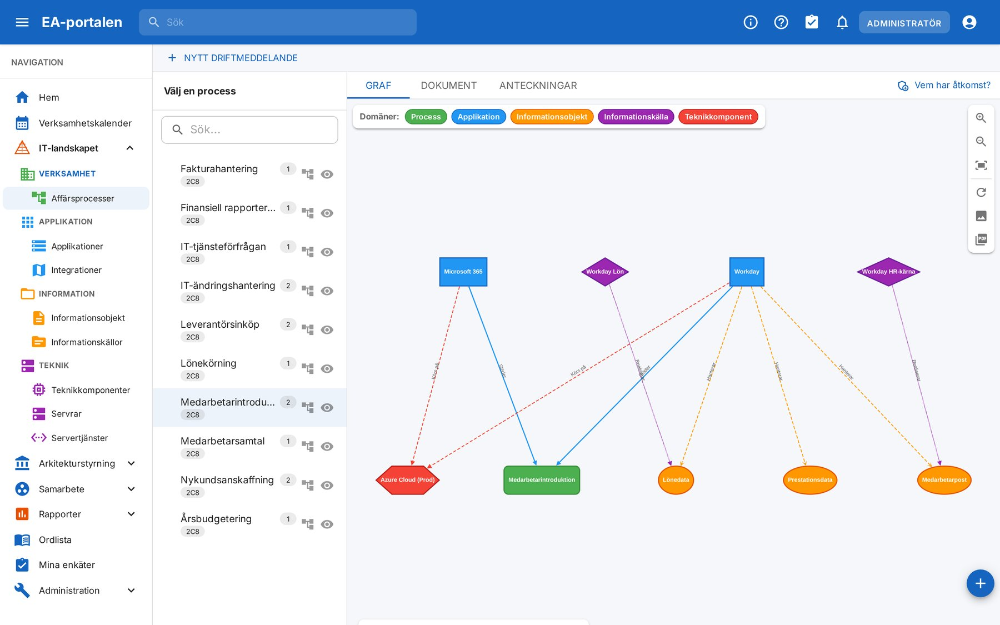
Processkartan: en process och allt som behövs för att genomföra den.
Rapporterna räknas fram ur landskapet och är alltid aktuella. Var finns överlapp? Vilka processer saknar systemstöd? Vilka leverantörer är vi beroende av?
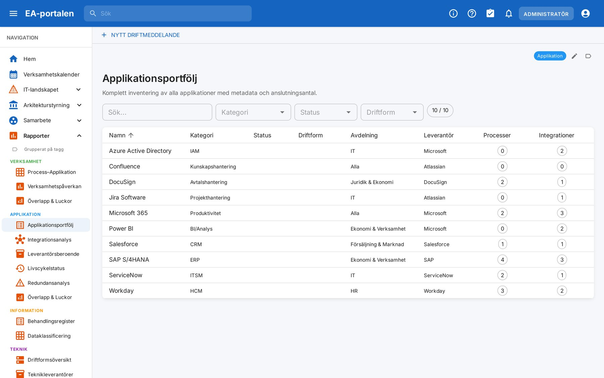
Applikationsportföljen med kategori, avdelning, leverantör och antal processer och integrationer.
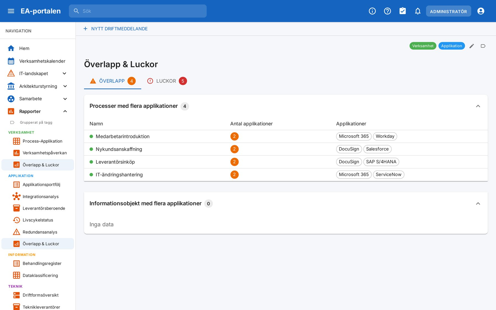
Överlapp och luckor: processer som stöds av flera system.
Rapporterna kan taggas, döpas om och läggas som snabblänkar på startsidan.
När passar det att uppgradera ett system? Kalendern visar verksamhetens kritiska perioder – lönekörning, bokslut, budget – bredvid planerade förändringar i IT-miljön.
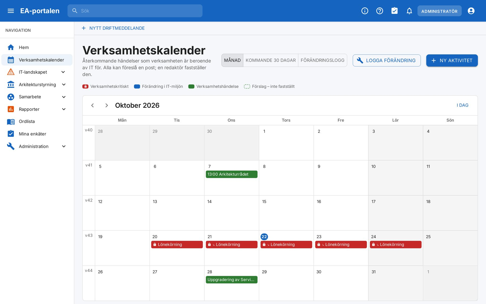
Frysperioder (rött) kopplas till de system och processer de berör. Startsidan varnar när en sådan pågår.
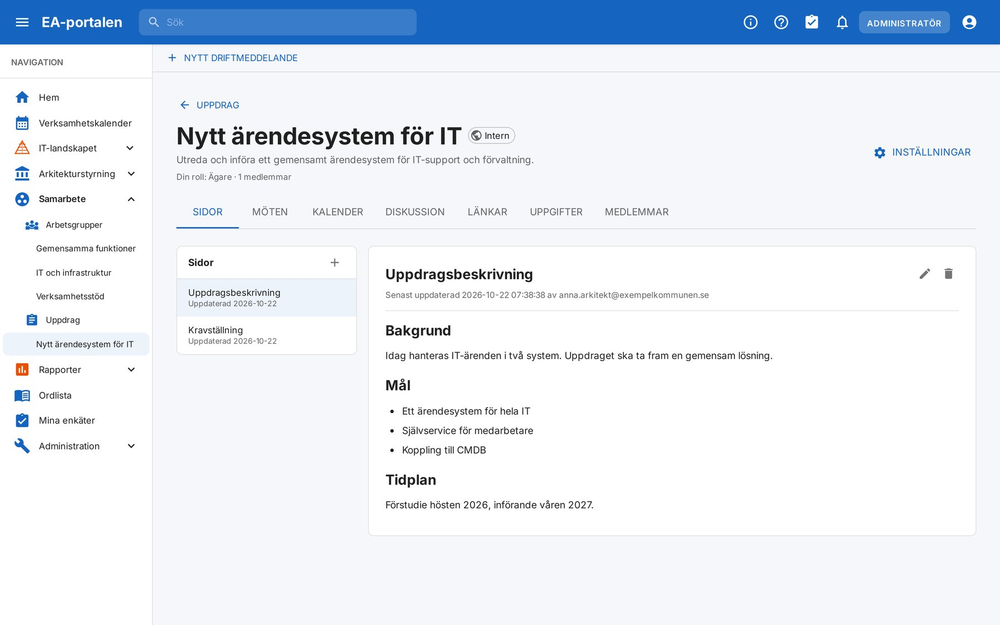
En arbetsyta per uppdrag eller arbetsgrupp – nära arkitekturen den handlar om.
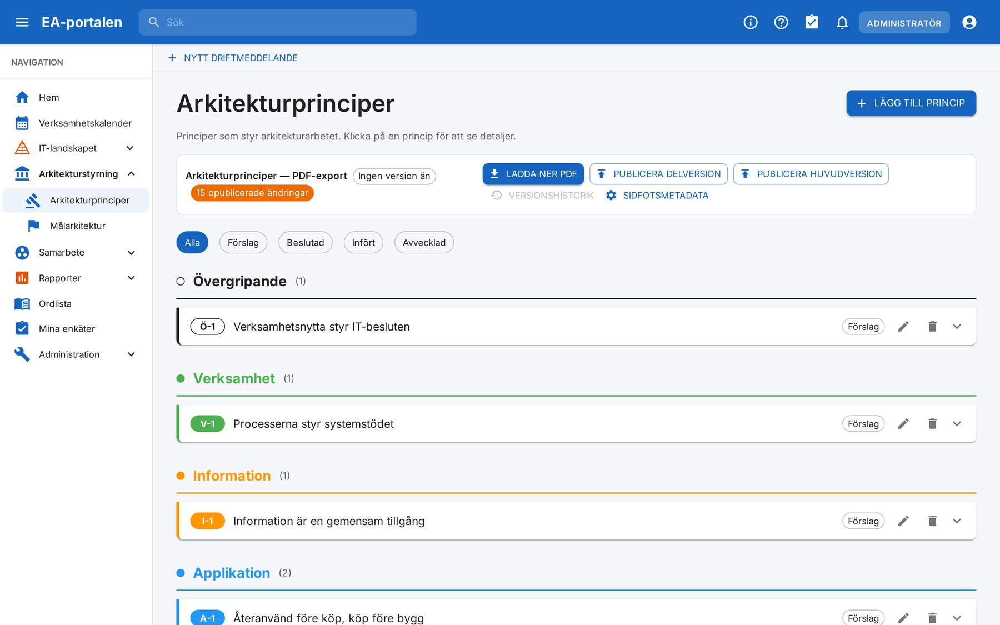
Principer, målbild och väg dit – på samma ställe som landskapet de styr.
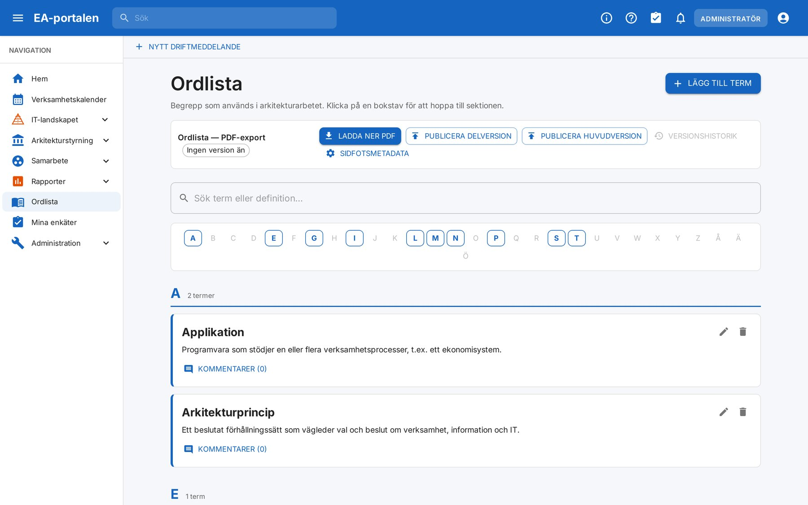
Ett gemensamt språk för arkitekturarbetet. Alla kan föreslå nya begrepp.
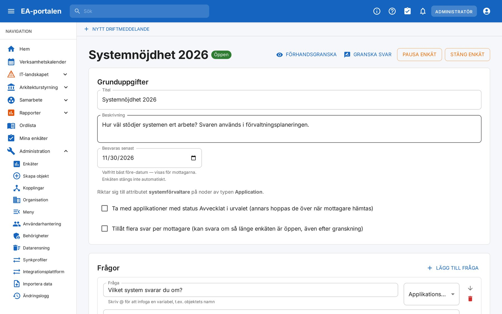
Fråga systemförvaltarna direkt – svaren blir rapporter som går att jämföra år från år.
Låt källsystemen fylla portalen. Plattformen hämtar uppgifter på schema, bearbetar dem i flöden och lämnar dem till portalen – så att landskapet aldrig blir inaktuellt.
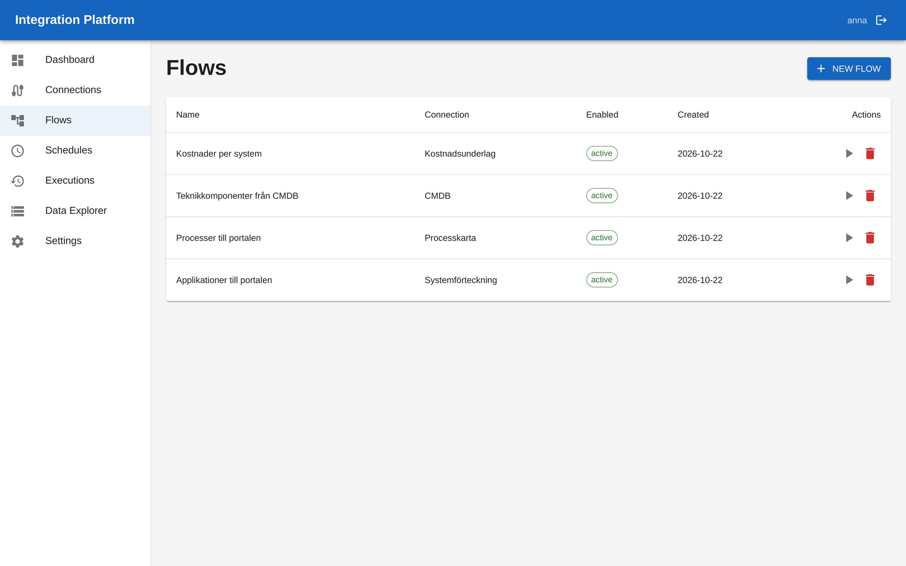
Fyra exempelflöden: systemförteckningen från SharePoint, processkartan från 2C8, teknik från CMDB och kostnadsunderlag från CSV.
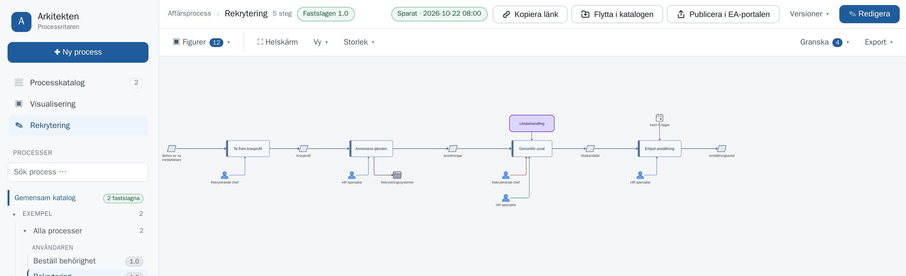
En fastslagen affärsprocess i Arkitekten: aktiviteter, verksamhetsobjekt, roller, IT-stöd och krav.
Arkitekten ritar processerna, och modulen kopplar ihop dem med portalen:
Verksamhet, förvaltning och IT ser samma landskap – i stället för var sin lista i var sitt kalkylblad.
Konsekvenser av en förändring syns innan den görs: vilka processer, vilken information, vilka integrationer.
Fri programvara som utvecklas i samverkan. Förbättringar kommer alla installationer till godo.
Installationsfil och manual: github.com/Arkitektursamverkan/arkitekturportalen-drift → Releases
Kontakt: David Bjärlestam, david.bjarlestam@hfab.se · Arkitektursamverkan (Halmstads Fastighets AB)